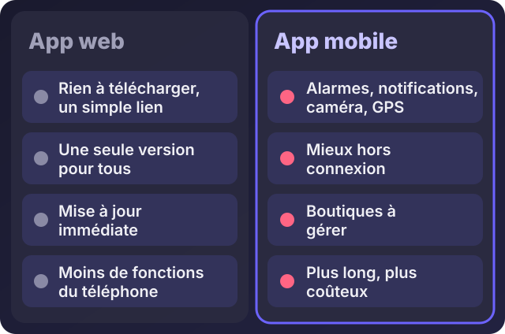

Application web ou application mobile : laquelle choisir pour votre entreprise ?

Écouter cet article · environ 5 min
« Je veux une application. » C'est la phrase que j'entends le plus, et la question qui vient juste après est toujours la même : faut-il une application web ou une application mobile ? Le mauvais choix peut coûter des mois et beaucoup d'argent. Voici comment décider.
La réponse courte
Commencez presque toujours par une application web. Elle est plus rapide à construire, moins chère, et elle marche sur tous les téléphones et tous les ordinateurs. Passez à une application mobile seulement quand une fonction précise l'exige.
Les quatre sortes d'applications
- L'application web : elle s'ouvre dans le navigateur, avec une simple adresse. Rien à télécharger, une seule version pour tout le monde.
- La PWA (application web progressive) : une application web qu'on peut ajouter à l'écran d'accueil, comme une vraie application. Elle garde certaines données pour mieux résister aux coupures de réseau. web.dev explique le principe.
- L'application mobile native : développée pour Android ou pour iPhone, installée depuis la boutique d'applications. Elle a accès à toutes les fonctions du téléphone.
- L'application multiplateforme : un seul code pour Android et iPhone, avec des outils comme Flutter. C'est un compromis entre coût et fonctions.

Quand l'application web suffit
- Elle sert à gérer ou suivre quelque chose : commandes, factures, demandes, rendez-vous, stock.
- Vos utilisateurs ont des téléphones variés, et vous ne pouvez pas les obliger à installer quoi que ce soit.
- Vous voulez commencer vite et corriger au fil des retours.
- Vous avez un budget limité : une seule version à construire et à maintenir.
Quand il faut une application mobile
- Il faut des alarmes ou des notifications fiables, même quand le téléphone est verrouillé.
- Il faut le GPS en continu, la caméra, le Bluetooth, les contacts ou d'autres fonctions avancées du téléphone.
- L'application doit marcher longtemps sans connexion, avec beaucoup de données sur l'appareil.
- Vos utilisateurs la lancent plusieurs fois par jour, et la présence de l'icône sur l'écran compte.
Cinq questions pour choisir
- A-t-on besoin d'une fonction que seul le téléphone offre ? Si oui, mobile. Sinon, web.
- Tous les utilisateurs ont-ils le même type de téléphone ? Android seul, c'est plus simple. Android et iPhone ensemble, il faut une version web ou multiplateforme.
- Travaillent-ils sans connexion ? Si la connexion est souvent coupée, pensez PWA ou mobile.
- Quels sont le budget et le délai ? Deux versions natives coûtent plus que deux fois une version web.
- Qui maintiendra l'application ? Une application mobile demande des mises à jour à chaque nouvelle version du téléphone.
Trois exemples de mon travail
- Le retrait de chèques chez IvoirRapid : j'ai choisi une PWA. Les clients n'ont rien à chercher dans une boutique, l'application s'installe depuis un lien et se met à jour pour tout le monde en même temps. Les fonctions nécessaires (formulaire, suivi, photo de preuve) marchent très bien dans le navigateur.
- Sonnera, mon application de rappels et de suivi d'équipe : la fonction centrale est une alarme qui sonne même téléphone verrouillé. Cela demande une application Android. J'y ai ajouté une version web pour les iPhone et les ordinateurs, qui sert à organiser les tâches. Deux versions, parce que le besoin l'exigeait.
- L'application des coursiers : ils travaillent sur le terrain, avec des tournées à consulter. Une interface mobile s'imposait, alimentée par une API que j'ai construite.
Les coûts auxquels on pense moins
Une application mobile a des coûts cachés : un compte développeur pour publier (unique pour Google Play, annuel pour Apple), des règles de validation à respecter, des mises à jour à publier, des tests sur plusieurs modèles de téléphones. Rien d'insurmontable, mais il faut le prévoir dès le départ.
Mon conseil
- Décrivez le besoin en trois lignes : qui fait quoi, sur quel appareil.
- Construisez la version web (ou la PWA) d'abord, avec les fonctions essentielles.
- Faites-la utiliser par de vrais utilisateurs pendant quelques semaines.
- Seulement ensuite, décidez d'une application mobile, avec des preuves de ce qui manque.
Si vous hésitez entre les deux pour votre projet, décrivez-le-moi sur WhatsApp : je vous dis honnêtement laquelle choisir, et pourquoi.